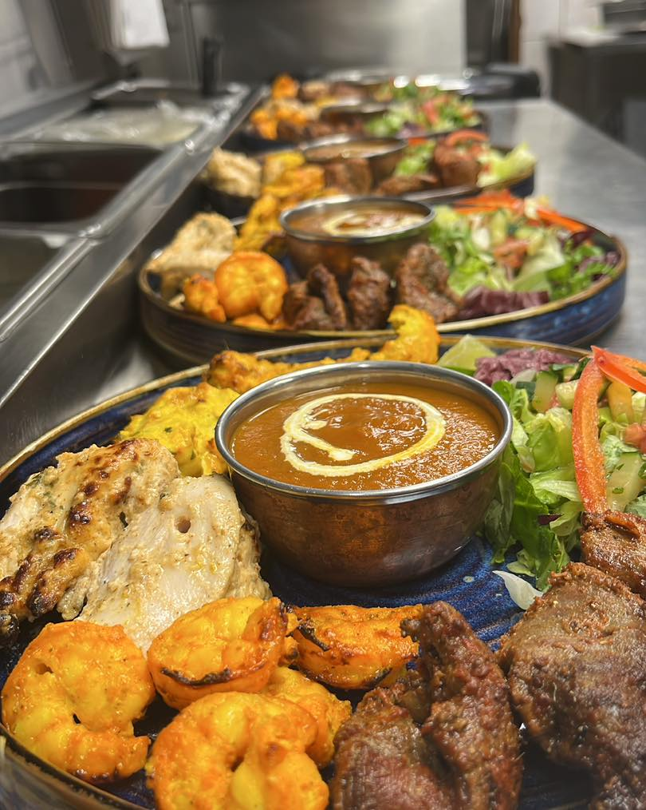
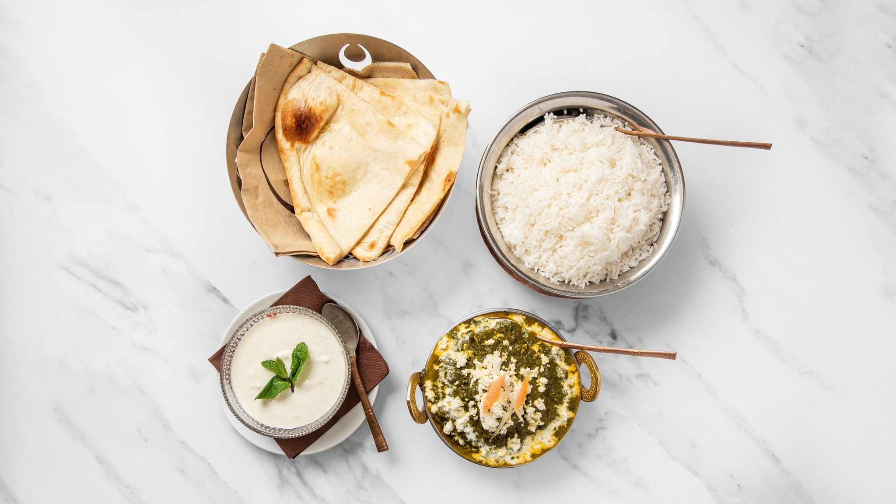
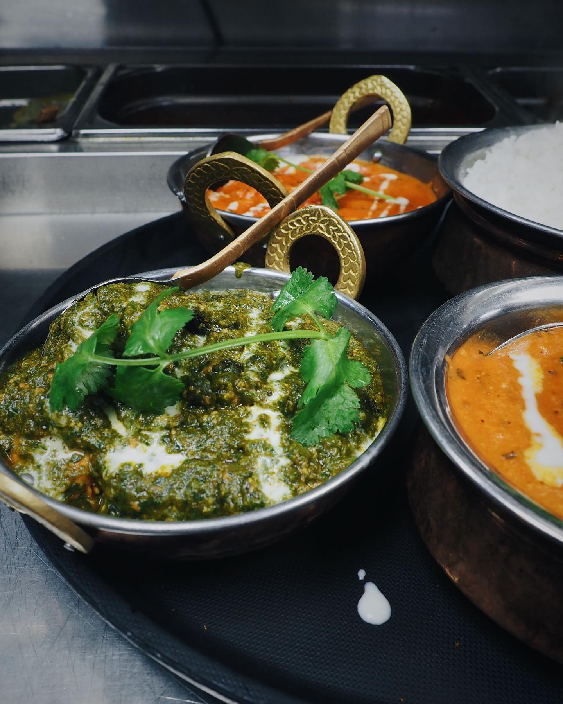
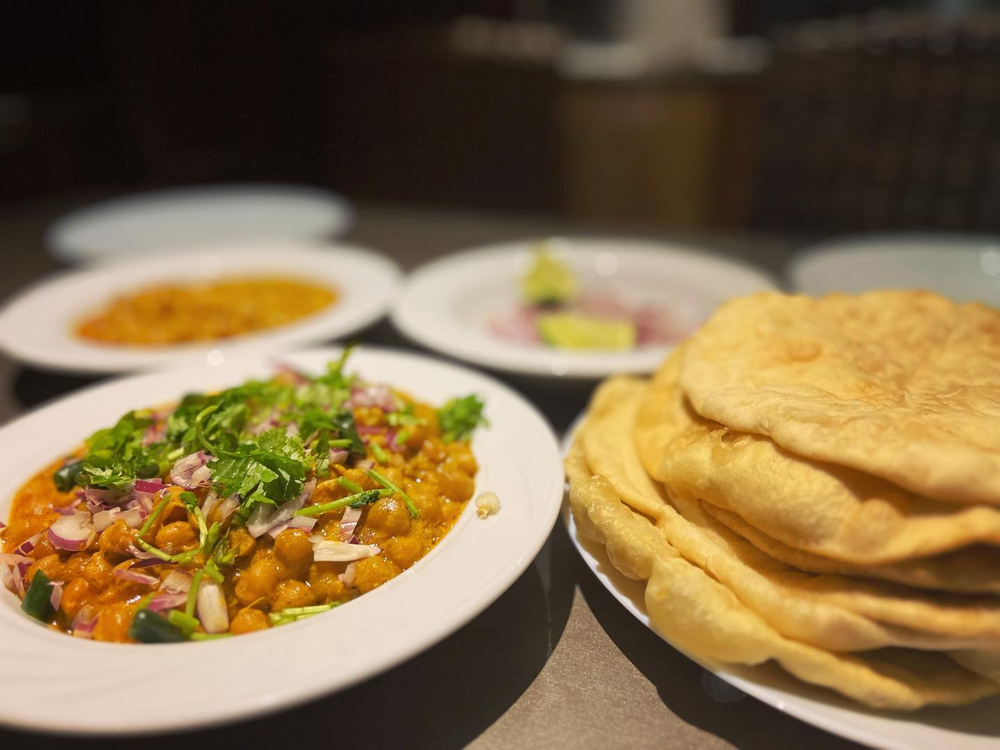
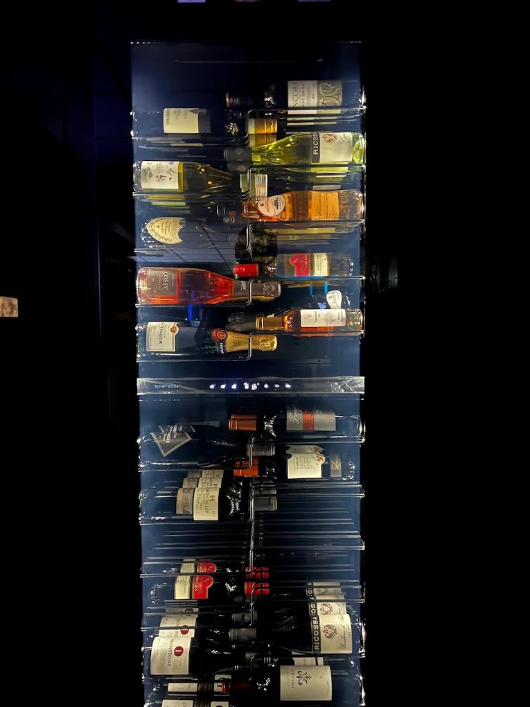

★★★★★
"Oulun paras intialainen — paneerin tuntee heti tuoreeksi, ja tandoori-kana on parasta mitä olen syönyt vuosiin."
Perheravintola, joka yhdistää tuoreet kotimaiset raaka-aineet, käsintehdyn garam masalan ja huolella valitun viinilistan. Halal-vaihtoehdot ja yksi Suomen laajimmista kasvis- ja vegaanivalikoimista.
Lähes kahden vuosikymmenen jälkeen vieraat tulevat takaisin — ja tuovat ystäviä mukanaan.
"Oulun paras intialainen — paneerin tuntee heti tuoreeksi, ja tandoori-kana on parasta mitä olen syönyt vuosiin."
"Käymme täällä joka kuukausi. Henkilökunta muistaa toiveemme ja viinisuositukset osuvat aina kohdalleen."
"Olimme isolla porukalla tasting-menulla — sai pyytää tulisemmin, ja palvelu sopeutui kaikkien ruokavalioihin."
Indian Cuisine on Oulun vanhin intialainen ravintola. Olemme perheomisteinen ravintola, jonka perustivat Nusrat ja Arindam (Ari) rakkaudesta rehelliseen, autenttiseen intialaiseen ruokaan.
Valmistamme ruokamme tuoreista kotimaisista raaka-aineista, jotka maustamme perinteisillä intialaisilla mausteilla ja omalla ainutlaatuisella garam masala -sekoituksellamme. Paneerimme valmistetaan talossa joka päivä.
Lue koko tarina →
Päivittäinen lounasbuffet, koko illan à la carte ja yksityistilaisuudet — saman katon alla, samalla intohimolla.

Vaihtuva lounas joka päivä arkisin. Kana-, liha- ja kasvisvaihtoehdot, naan, riisi ja salaatit. Kahvi sisältyy.
Katso päivän lounas →
Tandoori-erikoisuudet, biryanit, currymaiset annokset ja laaja kasvis- ja vegaanivalikoima. Maustaminen miedoksi tai tuliseksi maun mukaan.
Selaa ruokalistaa →
Kuratoidut maistelumenut ryhmille — liha tai kasvis, alkaen 59 € / henkilö. Sovi vierailusi etukäteen ja anna meidän hoitaa loput.
Kysy lisää →
Yritystilaisuudet, syntymäpäivät, häät. Räätälöity menu, toimitus ja tarjoilu — Oulun alueella. Pyydä tarjous.
Pyydä tarjous →Arin pitkä kiinnostus viineihin näkyy listalla, joka on suunniteltu täydentämään intialaisia makuja. Saatavilla lasi- ja pulloannoksina, sekä päivän by-the-glass -valikoima.
Wine barimme on auki ruoka-aikojen ulkopuolellakin — tule rauhalliselle lasilliselle ja tutustu kuukauden viiniin.
Selaa juomalista
Kyllä. Tarjoamme yhden Suomen laajimmista vegaani- ja kasvisvalikoimista — paneer, kasvis-tandoori, dal, kasvis-biryani ja paljon muuta. Vegaanivaihtoehdot ovat selvästi merkittyjä ruokalistalla.
Kyllä. Käytämme halal-sertifioitua kanaa ja lampaanlihaa. Pyydä ruokaa tilatessasi halal-vaihtoehto — kerromme mielellämme lisää.
Helpoiten puhelimitse: 08 5301640. Suuremmille seurueille ja tasting-menulle (8+ henkilöä) suosittelemme varauksen viimeistään 24 tuntia etukäteen.
Kyllä. Wolt-kotiinkuljetus on käytössä kaikkina aukioloaikoina. Voit myös tulla noutamaan tilauksen ravintolasta — soita ja kerro mitä haluat.
Kyllä. Räätälöity catering yritystilaisuuksiin, häihin ja syntymäpäiviin. Tasting-menut alkaen 8 hengen seurueille, hinta alkaen 59 €/henkilö. Pyydä tarjous tästä.
Ravintola sijaitsee Kajaaninkatu 38:ssa Oulun keskustassa. Kadun varrella ja lähistöllä on maksullisia kadunvarsipaikkoja, sekä lähimmät pysäköintihallit muutaman minuutin kävelymatkan päässä.